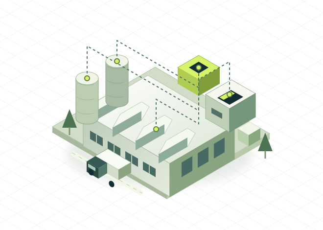

01
Giám sát sản xuất
Theo dõi trạng thái dây chuyền, sản lượng và thời gian dừng máy trên một giao diện thống nhất.
Trao đổi bài toánCÔNG NGHỆ CHO SẢN XUẤT THÔNG MINH
Đưa dữ liệu từ dây chuyền đến bàn điều hành. Chúng tôi giúp doanh nghiệp sản xuất nhìn rõ hiện trạng, tối ưu vận hành và chuyển đổi số từng bước.
Từ một dây chuyền.
Đến một hệ sinh thái dữ liệu.

01 / GIẢI PHÁP
Mỗi nhà máy có một điểm xuất phát khác nhau. Bắt đầu từ bài toán cần giải quyết, rồi kết nối thành một hệ thống.
Theo dõi trạng thái dây chuyền, sản lượng và thời gian dừng máy trên một giao diện thống nhất.
Trao đổi bài toánLiên kết dữ liệu sản xuất, kho và tài chính. Xây nền tảng báo cáo nhất quán giữa các bộ phận.
Trao đổi bài toánQuan sát điện năng theo khu vực, phát hiện mức tiêu thụ bất thường và theo dõi định mức sản xuất.
Trao đổi bài toánChuẩn hóa biểu mẫu, luồng phê duyệt và bảo trì. Giảm thao tác lặp lại trong công việc hằng ngày.
Trao đổi bài toán02 / GÓC NHÌN ĐIỀU HÀNH
Chọn một dây chuyền để khám phá cách dữ liệu sản xuất trở thành thông tin có thể hành động.
BẢN MINH HỌA · DỮ LIỆU GIẢ LẬPGỢI Ý TỪ DỮ LIỆU
Rà soát nguyên nhân dừng máy ngắn và thời gian đổi mã để tìm cơ hội cải thiện hiệu suất.
OEE là tích của tỷ lệ sẵn sàng, hiệu năng và chất lượng. Các chỉ số trên chỉ dùng để trải nghiệm giao diện.
03 / CÁCH TRIỂN KHAI
Một lộ trình thực tế: hiểu vấn đề, chứng minh giá trị trên phạm vi thí điểm, rồi mới nhân rộng.
Rà soát hệ thống hiện tại, chất lượng dữ liệu và nhu cầu của người vận hành.
Đầu ra / Bài toán & phạm viChọn kiến trúc, nguồn dữ liệu và bộ chỉ số phù hợp với một dây chuyền thí điểm.
Đầu ra / Thiết kế & dữ liệu mẫuĐưa dashboard vào sử dụng, đo theo tiêu chí thống nhất và lấy phản hồi thực tế.
Đầu ra / Kết quả thí điểmChuẩn hóa vận hành, đào tạo đội ngũ và triển khai theo từng khu vực ưu tiên.
Đầu ra / Hệ thống & tài liệu04 / VỀ NEXAFACTORY
NexaFactory là ý tưởng startup hướng đến chuyển đổi số trong sản xuất. Chúng tôi đặt con người và bài toán vận hành ở trung tâm của mỗi giải pháp.
Kết nối với hệ thống hiện cóƯu tiên tận dụng dữ liệu và hạ tầng doanh nghiệp đang sử dụng.
Đo lường bằng chỉ số rõ ràngThống nhất tiêu chí đánh giá trước khi triển khai.
Trao quyền cho đội ngũ vận hànhGiao diện dễ hiểu, tài liệu đầy đủ và bàn giao có hướng dẫn.
05 / CÂU HỎI THƯỜNG GẶP
Không nhất thiết. Bước khảo sát sẽ đánh giá khả năng tích hợp với ERP, thiết bị và dữ liệu đang có. Phương án cụ thể phụ thuộc giao diện kết nối, chất lượng dữ liệu và yêu cầu vận hành.
Có thể thiết kế tích hợp qua API, dịch vụ được cho phép hoặc dữ liệu xuất theo lịch. Kết nối thực tế cần quyền truy cập, tài liệu kỹ thuật và thống nhất với đội quản trị ERP.
Đây là bản minh họa với dữ liệu giả lập, không phải sản phẩm giám sát đang kết nối tới nhà máy. Bạn có thể chuyển giữa các dây chuyền để xem cách giao diện thay đổi.
Phụ thuộc số lượng thiết bị, phạm vi tích hợp, chất lượng dữ liệu và chức năng cần xây dựng. Sau khảo sát mới có thể thống nhất phạm vi, tiến độ và dự toán phù hợp.
06 / BẮT ĐẦU MỘT CUỘC TRAO ĐỔI
Hãy chia sẻ điều bạn muốn cải thiện trong nhà máy. Bắt đầu từ một vấn đề cụ thể, cùng tìm hướng đi phù hợp.
contact@danhnguyen.me Địa chỉ liên hệ mẫu · cần kích hoạt trước khi sử dụngKết nối dữ liệu.
Để mỗi quyết định có cơ sở.